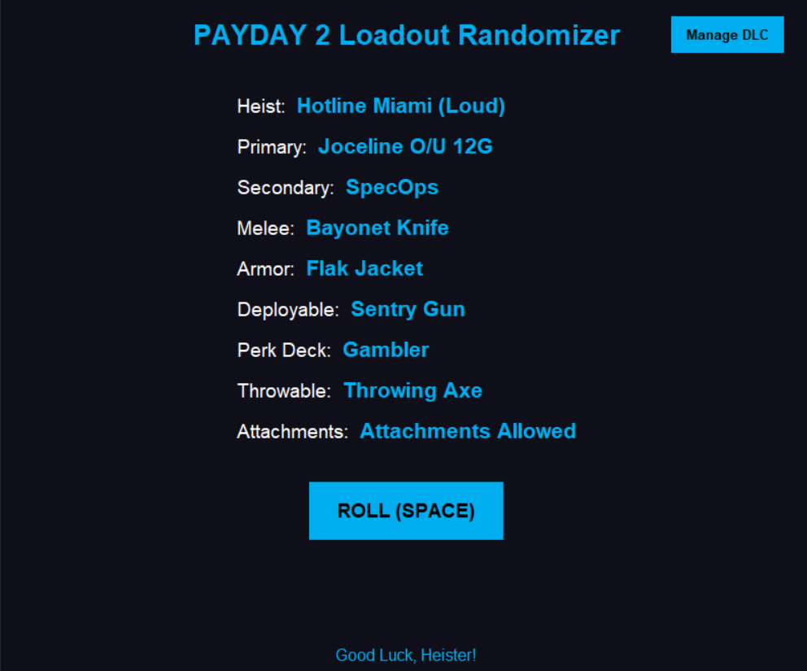
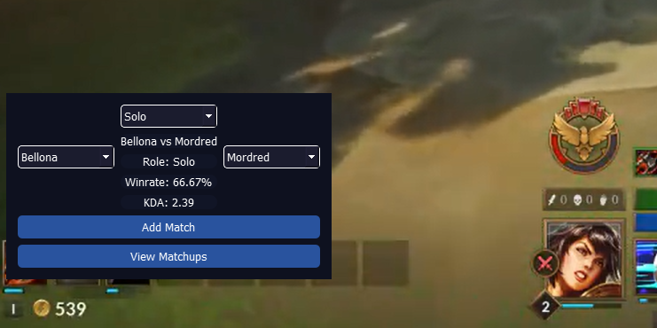
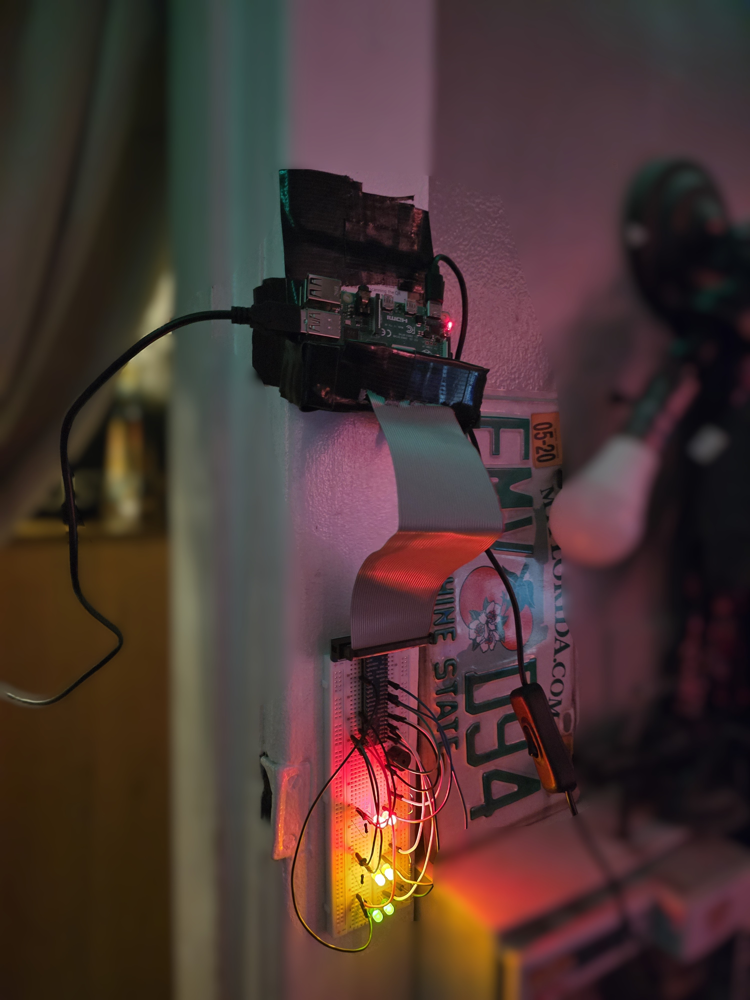

Featured Projects
A collection of projects showcasing my experience in Artificial Intelligence, Database Systems, Software Engineering, and with multiple different Libraries and Frameworks.

Self-Driving Car AI
A two-semester university project where I researched, designed, and implemented a self-driving vehicle using artificial intelligence and computer vision techniques.

Payday 2 Loadout Randomizer
A desktop application that generates randomized PAYDAY 2 loadouts using a MySQL database. The application includes DLC ownership filtering, allowing players to include or exclude owned and unowned DLC content. It generates a complete randomized loadout, including weapons, equipment, and heists, through an easy-to-use desktop interface.

Smite 2 Lane Analytics Overlay
A SQL-powered game analytics system that stores and analyzes Smite match data to provide personalized performance statistics. The application tracks metrics such as KDA, win rate, and average match duration based on god selection, player role, and enemy matchups. The system includes a data entry interface for adding new matches and an in-game overlay that displays personalized gameplay insights.
The Sims 4 Legacy Challenge Tracker
A full-stack Android application designed for The Sims 4 players to organize and track progress through legacy and generational challenges. The application retrieves challenge data from a Flask-based backend with MongoDB storing generations, goals, traits, careers, and milestones.

Raspberry Pi Human Detection System
An embedded computer vision system that uses a custom TensorFlow Lite object detection model running on a Raspberry Pi to detect nearby people in real time. Detection confidence is displayed using a multi-stage LED indicator connected through a Raspberry Pi GPIO breadboard circuit, while a buzzer activates when confidence reaches a critical threshold.